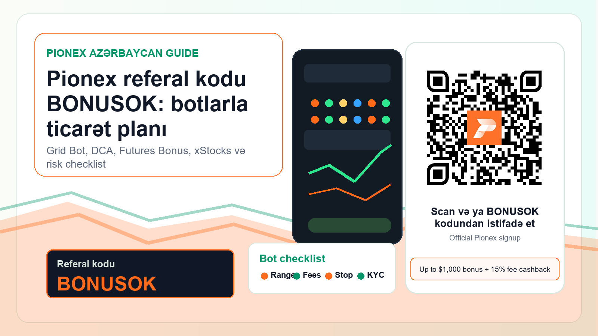

Açıqlama. Bu səhifədə referral link var. Uyğun istifadəçi link və ya QR ilə qeydiyyatdan keçərsə, komissiya ala bilərik. Bu, maliyyə, hüquqi və ya vergi məsləhəti deyil.
Risk xəbərdarlığı. Kripto, botlar, futures, leverage və tokenized stock məhsulları pul itkisi yarada bilər. Bonus və cashback zəmanətli deyil və qaydalardan asılıdır.
Plan: Pionex referal kodunu sadəcə bonus kimi yox, ticarət sistemi kimi istifadə et
Bu materialın məqsədi “Pionex referal kodu nədir?” sualına qısa cavab verməklə bitmir. Azərbaycanda aktiv kripto treyderi üçün daha vacib sual budur: Pionex mənə hansı iş axınında kömək edə bilər, BONUSOK kodu harada faydalıdır, botlar hansı bazar şəraitində işləyir və hansı hallarda ümumiyyətlə istifadə etməmək daha ağıllıdır? Ona görə bu səhifə həm Pionex referral code, həm Pionex referal kodu, həm Pionex dəvət kodu, həm də Pionex promo kodu axtaran istifadəçiyə yönəlib. Kod: BONUSOK.
Aktiv treyderlər üçün əsas cazibə Pionex-in built-in bot ekosistemidir: Grid Bot, DCA Bot, Futures Grid, spot bazar, perpetual futures və 2026-cı ildə daha çox diqqət alan xStocks/tokenized stocks mövzusu. Bonus və 15% fee cashback maraqlı giriş siqnalıdır, amma real dəyər düzgün risk planı, kiçik başlanğıc, komissiya hesablaması və bazar strukturuna uyğun bot seçməkdir. Bu yanaşma daha az emosional klik gətirə bilər, amma daha keyfiyyətli referal gətirmə şansı yüksəkdir.
Qısa cavab: hansı kodu yazmaq lazımdır?
Pionex-də uyğun istifadəçilər üçün istifadə ediləcək kod BONUSOK-dur. Rəsmi keçid: Pionex BONUSOK referral link. Qeydiyyat zamanı və ya QR kodu skan etdikdən sonra hesabda kodun tətbiq edildiyini yoxlamaq lazımdır. Bonus “up to $1,000” və 15% fee cashback kimi təqdim olunur, amma bu şərtlər regiona, KYC-yə, depozitə, ticarət həcminə, məhsulun mövcudluğuna və Pionex qaydalarına bağlı ola bilər.
Əgər Azərbaycandasansa, birinci addım “bonus nə qədərdir?” deyil. Birinci addım budur: hesab açmaq üçün telefon və KYC dəstəklənirmi, Pionex-in unsupported list-ində ölkən varmı, bank və payment rail tərəfində problem varmı, futures və tokenized stock məhsulları sənə açıqdırmı, vergini və hesabat məsuliyyətini necə aparacaqsan? Bu səhifə həmin yoxlamanı copy-paste checklist kimi verir.
Azərbaycan üçün yerli kontekst: hüquqi və compliance baxışı
Azərbaycan kripto bazarı 2026-cı ildə daha ciddi tənzimləmə mərhələsinə yaxınlaşır. Açıq mənbələrdə Mərkəzi Bankın virtual aktivlər üzrə qanun layihəsini hazırladığı və ilin sonuna qədər qəbul gözləntisi olduğu bildirilir. Bu hələ o demək deyil ki, hər xarici exchange və hər məhsul avtomatik olaraq yerli istifadəçi üçün problemsizdir. Əksinə, aktiv treyder üçün bu siqnal belə oxunmalıdır: KYC, AML, vergi, bank köçürmələri, derivativlər və tokenized securities kimi mövzulara daha ciddi yanaşmaq lazımdır.
Azərbaycanda manat rəsmi ödəniş vasitəsidir; kripto aktivləri gündəlik ödəniş üçün qanuni pul kimi təqdim etmək düzgün deyil. Bu səhifə kriptonu maliyyə məsləhəti və ya hüquqi məsləhət kimi təqdim etmir. Məqsəd Pionex istifadə etmək istəyən azərbaycandilli treyderə proses düşüncəsi verməkdir: əvvəl uyğunluğu yoxla, sonra kiçik test et, sonra botun riskini ölç, yalnız bundan sonra həcmi artırmağı düşün.
Əgər sən Bakı, Gəncə, Sumqayıt, Naxçıvan və ya diasporadan olan azərbaycandilli istifadəçisənsə, eyni qayda keçərlidir: Pionex hesabında yaşayış ölkəsi, sənəd, telefon, KYC, məhsul və ödəniş kanalı uyğun gəlmirsə, VPN, başqa şəxsin sənədi və ya yanlış rezidentlik məlumatı ilə sistemi aldatmaq olmaz. Bu həm hesab riskidir, həm də referral funnel üçün keyfiyyətsiz trafikdir.
Grid Bot: Pionex-in ən güclü axtarış niyyəti
Grid Bot qiymət diapazonu daxilində çoxlu al-sat səviyyələri qurur. Treyder aşağı və yuxarı sərhəd seçir, sonra bot qiymət aşağı düşəndə hissə-hissə alır, yuxarı qalxanda hissə-hissə satır. Bu, trend proqnozu deyil; bu, range və volatility üzərində qurulan execution planıdır. Ona görə “bot mənə pul qazandıracaq” düşüncəsi səhvdir. Düzgün düşüncə belədir: “Bu pair likviddir, bu range üçün səbəbim var, fees hesablanıb, stop planım var, bot yalnız mənim planımı icra edir.”
Grid Bot Azərbaycan auditoriyası üçün maraqlıdır, çünki bir çox istifadəçi emosional girişdən, gecikmiş exit-dən və hər candle-a reaksiya verməkdən yorulur. Bot qayda verir. Amma qaydanın keyfiyyəti treyderin özündən asılıdır. Əgər range çox dar seçilibsə, fee grid profit-i yeyə bilər. Əgər range çox genişdirsə, kapital passiv qala bilər. Əgər asset likvid deyilsə, spread və slippage planı poza bilər. Əgər stop-loss yoxdur, trend bazarında bot uzun müddət zərərdə qala bilər.
BONUSOK burada əlavə fayda ola bilər: fee cashback yaxşı grid strategiyasının economics-ini bir az yaxşılaşdıra bilər. Amma cashback pis strategiyanı yaxşı strategiyaya çevirmir. Bu mesaj yüksək dəyərli treyderə daha uyğundur, çünki o bilir ki, real edge bonusdan yox, sistemdən gəlir.
DCA Bot: yavaş accumulation və kapital intizamı
DCA Bot müəyyən qayda ilə hissə-hissə alış etməyə kömək edir. Bu, xüsusilə böyük məbləği bir anda bazara salmaq istəməyən istifadəçi üçün faydalı ola bilər. Azərbaycanda USDT ilə işləyən, gəliri aylıq və ya layihə əsaslı olan treyderlər üçün DCA planı emosional “dip alım” qərarını strukturlaşdırır. Amma DCA sonsuz averaging down deyil. Asset keyfiyyəti, maksimum allocation, interval, take-profit və stop şərti əvvəlcədən yazılmalıdır.
Əgər DCA Bot seçirsənsə, özünə bu sualları ver: bu asset-i niyə seçirəm, maksimum neçə USDT ayıracağam, hansı qiymət və ya xəbər planı dəyişdirir, neçə həftədən bir nəticəni review edəcəyəm, fee və cashback-i necə izləyəcəyəm? Cavablar yoxdursa, bot yalnız avtomatik səhv etmə alətinə çevrilə bilər.
Futures Grid və perps: aktiv treyder üçün, amma ciddi risklə
Pionex 2026 materiallarında crypto perps və tokenized stock perps mövzusu önə çıxır. Perpetual futures spot ownership tələb etmədən underlying bazara exposure verir, amma margin, funding, leverage, mark price və liquidation riski yaradır. Bu məhsullar aktiv treyder üçün maraqlı ola bilər, çünki BTC, ETH, SOL və tokenized stock perps kimi bazarlarda bot workflow-u qurmaq mümkündür. Amma burada səhv daha sürətli cəzalandırılır.
Futures Grid açmazdan əvvəl yazılı checklist lazımdır: leverage neçədir, liquidation price hardadır, margin buffer nə qədərdir, funding mənfi olarsa nə edəcəksən, bot range-dən çıxanda manual exit planın nədir, maksimum itki kapitalının neçə faizidir, xəbərlər və earnings-style event-lər tokenized stock perps-ə necə təsir edə bilər? Bu suallar cavabsızdırsa, Spot Grid və ya DCA daha uyğun başlanğıcdır.
Futures Bonus yalnız eligible istifadəçi üçün onboarding motivasiyasıdır. Bonus almaq üçün leverage açmaq məcburiyyəti kimi düşünülməməlidir. Aktiv treyder üçün ən yaxşı istifadə forması: əvvəl məhsul qaydasını oxu, sonra demo və ya çox kiçik size ilə test et, sonra nəticəni jurnala yaz.
xStocks və tokenized stocks: Apple/Tesla/NVIDIA marağına düzgün çərçivə
2026-cı ildə Pionex xStocks və tokenized stocks mövzusunu aktiv şəkildə izah edir. Bu, azərbaycanlı treyder üçün maraqlı ola bilər: Tesla, Apple, NVIDIA, ETF-lər və commodities kimi mövzulara USDT ilə 24/7 exposure almaq fikri cəlbedicidir. Pionex mənbələrində tokenized instruments, spot token-lər və perpetual contracts haqqında danışılır. Lakin burada çox vacib ayrım var: tokenized stock price exposure deməkdir; bu, ənənəvi brokerdə səhmin tam hüquqi sahibliyi ilə eyni qəbul edilməməlidir.
Tokenized stock və xStocks üçün risk checklist belədir: sən underlying share sahibi deyilsənmi, delisting olarsa nə baş verir, off-hours liquidity necədir, spread nə qədər genişlənə bilər, dividend və corporate action qaydaları necə işləyir, məhsul ölkəndə və hesabında açıqdırmı, tax/reporting məsuliyyətin nədir? Pionex-in son təhlillərində tokenized stock delisting və ownership mövzularının ayrıca izah edilməsi məhz buna görə vacibdir. Bu səhifədə xStocks “tez varlanmaq” kimi yox, advanced exposure məhsulu kimi təqdim olunur.
Birinci həftə üçün praktik plan
1-ci gün: Rəsmi referral linki aç, QR kodu skan et və BONUSOK kodunun görünüb-görünmədiyini yoxla. Terms, KYC, country support və bonus qaydalarını oxu. 2-ci gün: Depozit etmədən interface-i gəz, Grid Bot, DCA Bot, Futures Grid və xStocks bölmələrini tanı. 3-cü gün: Kağız üzərində plan yaz: hansı pair, hansı kapital, hansı range, hansı stop, hansı review tarixi.
4-cü gün: Uyğunsansa və qərarın varsa, çox kiçik spot test et. 5-ci gün: fills, fees, cashback status, unrealized PnL və bot davranışını yoxla. 6-cı gün: Bazar strukturu dəyişibsə, botu dəyişmək və ya bağlamaq qərarını əvvəlki planla müqayisə et. 7-ci gün: Jurnal yaz: nəticə strategy-dən gəldi, yoxsa təsadüfdən? Risk limitinə əməl etdinmi? Yalnız bundan sonra size artırmağı düşün.
BONUSOK istifadə etməzdən əvvəl 12 maddəlik checklist
- Rəsmi Pionex referral link və ya bu səhifədəki QR koddan istifadə et.
- Qeydiyyat axınında BONUSOK kodunun tətbiq olunduğunu yoxla.
- Ölkə, telefon, sənəd və KYC dəstəyini yoxla; unsupported list-i oxu.
- Bonus və 15% fee cashback qaydalarının cari versiyasını hesab daxilində təsdiqlə.
- Heç vaxt VPN, false KYC, başqa şəxsin sənədi və ya yanlış rezidentlik məlumatı istifadə etmə.
- Spot Grid üçün range, grid count, pair liquidity, fees və stop condition yaz.
- DCA üçün maksimum allocation, interval, asset keyfiyyəti və review tarixi müəyyən et.
- Futures üçün leverage, liquidation, funding, margin buffer və maximum loss hesabla.
- xStocks/tokenized stocks üçün ownership, liquidity, delisting və product eligibility riskini anla.
- Vergi, bank köçürməsi, AML/KYC və yerli qanun məsələlərində professional məsləhət al.
- Bot nəticəsini screenshot yox, jurnal və rəqəmlərlə ölç: fee, fill, PnL, drawdown.
- Bonus üçün yox, təkrarlana bilən trading process üçün qeydiyyatdan keç.
Niyə bu material referal gətirə bilər?
Azərbaycandilli kripto kontentdə çox material ya ümumi xəbərdir, ya da sadə link paylaşımıdır. Bu səhifə isə konkret niyyətləri tutur: “Pionex referal kodu”, “Pionex dəvət kodu”, “BONUSOK”, “Pionex Grid Bot”, “Pionex DCA Bot”, “Pionex futures bot”, “xStocks nədir”, “Azərbaycanda crypto trading”. Bu kombinasiyada həm high-intent referral search var, həm də aktiv treyder üçün məhsul izahı var.
Referral baxımından ən dəyərli istifadəçi o deyil ki, sadəcə bonus görüb hesab açır. Ən dəyərli istifadəçi odur ki, hesab açır, KYC edir, kiçik test edir, botu anlayır, risk jurnalını aparır və uzun müddət ticarət edir. Ona görə səhifə clickbait deyil; məqsəd daha az, amma daha keyfiyyətli trafikdir.
Pionex referal kodu BONUSOK
Uyğun istifadəçisənsə və riskləri başa düşürsənsə, aşağıdakı rəsmi keçiddən istifadə edə bilərsən. Kodun tətbiqini, bonus/cashback şərtlərini və product availability-ni hesab daxilində yenidən yoxla.
Komissiya və cashback düşüncəsi
Grid strategiyasında çoxlu kiçik fill olur. Ona görə fee hesabı vacibdir. 15% fee cashback treyderin xərclərini azalda bilər, amma yalnız düzgün qurulmuş strategiyada real effekt yaradır. Əgər range səhvdirsə, cashback zərəri gizlədə bilər, aradan qaldıra bilməz.
Grid strategiyasında çoxlu kiçik fill olur. Ona görə fee hesabı vacibdir. 15% fee cashback treyderin xərclərini azalda bilər, amma yalnız düzgün qurulmuş strategiyada real effekt yaradır. Əgər range səhvdirsə, cashback zərəri gizlədə bilər, aradan qaldıra bilməz.
Likvidlik və spread
Aktiv treyder üçün likvidlik bonusdan daha önəmlidir. Spread genişdirsə, bot tez-tez alıb-satsa belə, real nəticə zəif ola bilər. Pair seçərkən yalnız popular adı yox, order book, volume, volatility və news riskini də yoxlamaq lazımdır.
Aktiv treyder üçün likvidlik bonusdan daha önəmlidir. Spread genişdirsə, bot tez-tez alıb-satsa belə, real nəticə zəif ola bilər. Pair seçərkən yalnız popular adı yox, order book, volume, volatility və news riskini də yoxlamaq lazımdır.
Jurnal aparmaq
Pionex botları nəticəni avtomatlaşdırır, amma öyrənməni avtomatlaşdırmır. Hər bot üçün başlanğıc səbəbini, parametrləri, gözlənilən ssenarini, stop qaydasını və nəticəni yaz. Bu, növbəti botu daha ağıllı qurmağa kömək edir.
Pionex botları nəticəni avtomatlaşdırır, amma öyrənməni avtomatlaşdırmır. Hər bot üçün başlanğıc səbəbini, parametrləri, gözlənilən ssenarini, stop qaydasını və nəticəni yaz. Bu, növbəti botu daha ağıllı qurmağa kömək edir.
Azerbaycan auditoriyası üçün dil
Çox istifadəçi exchange interface-ində ingilis terminləri görür: referral code, invite code, grid bot, futures, liquidation, fee cashback. Buna görə material azərbaycanca izah edir, amma real axtarış sözlərini də saxlayır. Bu SEO üçün də, istifadəçi üçün də daha təbii görünür.
Çox istifadəçi exchange interface-ində ingilis terminləri görür: referral code, invite code, grid bot, futures, liquidation, fee cashback. Buna görə material azərbaycanca izah edir, amma real axtarış sözlərini də saxlayır. Bu SEO üçün də, istifadəçi üçün də daha təbii görünür.
Kim istifadə etməməlidir?
Əgər gəlirini itirməyə hazır deyilsənsə, borc pul ilə trade etmək istəyirsənsə, futures liquidation mexanikasını anlamırsansa və ya KYC uyğunluğun şübhəlidirsə, referral kodu istifadə etmək üçün tələsmə. Birinci təhsil və risk planı gəlməlidir.
Əgər gəlirini itirməyə hazır deyilsənsə, borc pul ilə trade etmək istəyirsənsə, futures liquidation mexanikasını anlamırsansa və ya KYC uyğunluğun şübhəlidirsə, referral kodu istifadə etmək üçün tələsmə. Birinci təhsil və risk planı gəlməlidir.
Bot seçimi
Sideways bazarda Spot Grid daha məntiqli ola bilər. Uzunmüddətli accumulation üçün DCA daha sadədir. Directional və leverage planı olan təcrübəli treyder üçün Futures Grid maraqlı ola bilər. xStocks isə əlavə qayda və ownership riskləri tələb edir.
Sideways bazarda Spot Grid daha məntiqli ola bilər. Uzunmüddətli accumulation üçün DCA daha sadədir. Directional və leverage planı olan təcrübəli treyder üçün Futures Grid maraqlı ola bilər. xStocks isə əlavə qayda və ownership riskləri tələb edir.
Mənbələr və yoxlama qeydləri
- Pionex crypto perps və tokenized stock perps guide, xStocks ownership/delisting guide, Grid Trading guide və Pionex unsupported KYC list yoxlanılıb.
- Azərbaycan konteksti üçün Mərkəzi Bank strategiyası və 2026 virtual assets qanun layihəsi ilə bağlı açıq mənbələr yoxlanılıb.
- QR kod lokal və final vizual crop şəklində dekod edildi: https://www.pionex.com/en/signUp?r=BONUSOK.